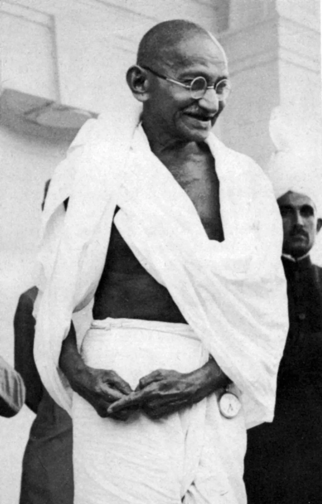
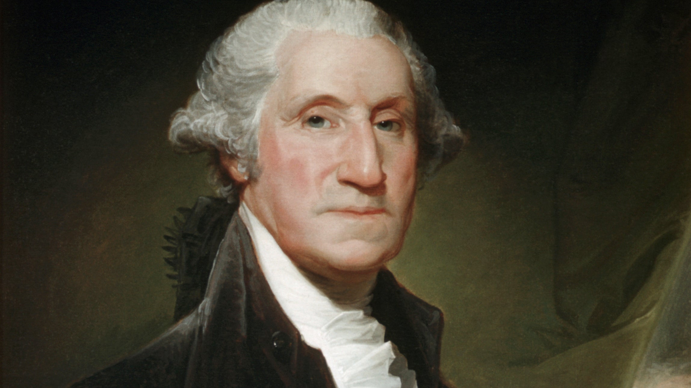
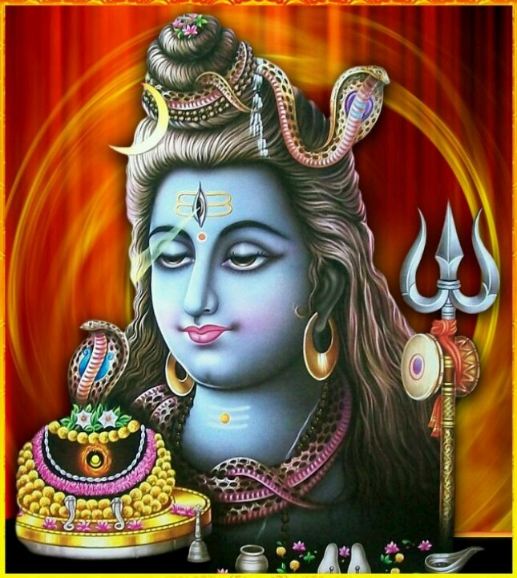

First Tab
Second Tab
Third Tab
Fourth Tab

**Mahatma Gandhi: The Father of the Nation**
Mahatma Gandhi, fondly known as the "Father of the Nation" in India, was a global icon of peace, nonviolence, and perseverance. Born on October 2, 1869, in Porbandar, Gujarat, Mohandas Karamchand Gandhi was raised in a devout Hindu family. His values of truth and righteousness were deeply rooted in his upbringing. Gandhi pursued law in London and later practiced in South Africa, where he experienced racial discrimination. This pivotal phase of his life sowed the seeds of his revolutionary ideas about civil rights and justice.
During his 21 years in South Africa, Gandhi pioneered the concept of **Satyagraha**, a nonviolent resistance movement. His efforts against apartheid marked the beginning of his journey as a leader who fought for the oppressed. Returning to India in 1915, Gandhi immersed himself in the freedom struggle against British colonial rule. He united millions of Indians, transcending barriers of caste, religion, and gender, and inspired them to fight for independence through nonviolence.
One of Gandhi’s most iconic movements was the **Salt March** of 1930, a 240-mile march to protest the British monopoly on salt production and taxation. This movement galvanized the masses and became a symbol of resistance. Gandhi also led other major campaigns like the **Non-Cooperation Movement** (1920-1922), the **Civil Disobedience Movement**, and the **Quit India Movement** (1942), which played crucial roles in India’s struggle for independence.
Gandhi’s philosophy of **Ahimsa** (nonviolence) was deeply influenced by ancient Indian traditions, as well as the teachings of Jesus and Tolstoy. He believed that nonviolence was the most powerful weapon for social and political change. His commitment to truth, or **Satya**, formed the cornerstone of his life and work. He often said, "Truth is God," and lived by this principle in every aspect of his life.
Beyond politics, Gandhi was a social reformer who worked tirelessly to eradicate untouchability, promote women’s rights, and uplift rural India. He emphasized the importance of self-reliance through the **Swadeshi movement**, encouraging Indians to boycott foreign goods and promote local industries like spinning and weaving. Gandhi’s vision of a self-sufficient India was rooted in the principles of simplicity, sustainability, and harmony with nature.
Gandhi’s life was not without challenges. He faced imprisonment multiple times, criticism from various quarters, and the pain of witnessing communal riots during the partition of India. Yet, he remained steadfast in his belief in nonviolence and unity. His assassination on January 30, 1948, by Nathuram Godse, marked a tragic end to a life dedicated to peace and justice.
Mahatma Gandhi’s legacy continues to inspire movements for civil rights and freedom across the world. Leaders like Martin Luther King Jr., Nelson Mandela, and the Dalai Lama have drawn from his teachings. His enduring message of love, nonviolence, and truth resonates across generations, reminding humanity of the power of peaceful resistance and the strength of collective action.
Gandhi once said, "Be the change that you wish to see in the world." His life exemplified this principle, making him a timeless symbol of hope and courage. As the world faces modern challenges, the values he espoused remain relevant, urging us to strive for a more just, compassionate, and inclusive society.

**George Washington: The First President of the United States**
George Washington, the first President of the United States, holds a revered place in American history as a symbol of leadership, integrity, and resilience. Born on February 22, 1732, in Westmoreland County, Virginia, Washington grew up in a modest plantation family. From a young age, he exhibited qualities of discipline and determination, which later shaped his remarkable career as a military leader and statesman.
Washington began his career as a surveyor and later served in the Virginia militia, gaining valuable military experience during the French and Indian War (1754–1763). His courage and strategic thinking in battles earned him recognition and respect, setting the stage for his future leadership roles. By the time tensions with Great Britain escalated in the 1770s, Washington had emerged as a prominent figure in colonial Virginia and a staunch advocate for American independence.
In 1775, during the Second Continental Congress, Washington was appointed Commander-in-Chief of the Continental Army. Leading the American forces in the Revolutionary War, he faced numerous challenges, including limited resources, poorly trained troops, and a powerful British military. Despite these obstacles, Washington’s perseverance and innovative strategies were instrumental in securing crucial victories, such as the Battle of Trenton in 1776 and the pivotal victory at Yorktown in 1781. His leadership during the harsh winter at Valley Forge showcased his ability to inspire and unite his troops under dire circumstances.
Following the war, Washington’s reputation as a national hero was firmly established. However, his humility and commitment to democratic principles were evident when he resigned his military commission in 1783, refusing to seize power and setting a precedent for civilian leadership. This act of relinquishing authority was unprecedented and solidified his place as a guardian of republican ideals.
Washington’s leadership extended beyond the battlefield. Recognizing the weaknesses of the Articles of Confederation, he played a crucial role in the Constitutional Convention of 1787, where his presence lent credibility and unity to the proceedings. His support for the new Constitution helped pave the way for its adoption, laying the foundation for a stronger federal government.
In 1789, Washington was unanimously elected as the first President of the United States, a testament to his unparalleled popularity and trust among the American people. During his two terms in office (1789–1797), he focused on building the framework of the new government. He established key precedents, including the creation of a Cabinet, the enforcement of federal laws, and the peaceful transition of power.
Washington’s presidency was marked by his commitment to neutrality in foreign affairs, exemplified by the Neutrality Proclamation of 1793, which kept the young nation out of European conflicts. Domestically, he navigated challenges like the Whiskey Rebellion and promoted economic stability through policies crafted by his Treasury Secretary, Alexander Hamilton.
Washington declined a third term, emphasizing the importance of limiting executive power. His farewell address in 1796 warned against political factions and foreign entanglements, offering timeless advice for future generations.
George Washington passed away on December 14, 1799, at his Mount Vernon estate in Virginia. Today, he is remembered as the "Father of His Country," a leader whose vision and principles shaped the United States into a lasting democracy. His legacy continues to inspire as a model of selfless service, dedication, and unwavering commitment to the ideals of liberty and justice.

**Lord Shiva: The Supreme Deity of Transformation and Destruction**
Lord Shiva, one of the principal deities of Hinduism, is a symbol of ultimate power, spirituality, and transformation. Revered as the destroyer in the Hindu trinity (Trimurti) alongside Brahma, the creator, and Vishnu, the preserver, Shiva embodies the dynamic balance of creation, preservation, and destruction that sustains the universe. He is also worshipped as the Mahadeva, or the great god, representing timeless existence and cosmic energy.
Shiva is often depicted as a meditative ascetic, seated in deep contemplation on Mount Kailash, the spiritual center of the universe. His physical representation is rich with symbolism. His matted hair signifies his control over the elements, while the crescent moon adorning his head represents time and the cycle of creation. The sacred Ganga flowing from his locks symbolizes purification and the sustenance of life. Around his neck is a coiled snake, representing his mastery over death and fear.
Shiva’s third eye, located on his forehead, signifies his spiritual wisdom and the ability to see beyond the physical realm. This eye is also a source of immense power, capable of destroying evil and ignorance. The trident (trishula) he carries is another significant symbol, representing the three fundamental aspects of existence—creation, preservation, and destruction. His damaru, a small drum, signifies the rhythm of cosmic creation.
Lord Shiva’s paradoxical nature makes him a complex and fascinating deity. On one hand, he is the ultimate ascetic, embodying renunciation and detachment. On the other, he is a householder, devoted to his consort Parvati and their children, Lord Ganesha and Lord Kartikeya. This duality reflects his role as both a detached yogi and a compassionate protector of the world.
Shiva is also the god of destruction, but his role as the destroyer is not one of chaos or negativity. Rather, it is a necessary function for the renewal and continuation of the cosmic cycle. By destroying the old and the corrupt, Shiva paves the way for new beginnings and transformations, making him a symbol of change and growth.
Worship of Shiva often involves the **lingam**, a phallic representation that symbolizes his creative energy and the union of the masculine and feminine principles of the universe. The Maha Shivaratri festival is one of the most important celebrations dedicated to Shiva, where devotees fast, meditate, and offer prayers to seek his blessings for spiritual growth and worldly success.
Shiva’s cosmic dance, known as the **Tandava**, represents the perpetual motion of the universe through creation, preservation, and destruction. This dance is both awe-inspiring and fearsome, symbolizing the eternal cycle of life and death.
In Hindu mythology, Shiva is also known for his compassion and willingness to protect humanity. One of the most famous legends is the churning of the ocean (Samudra Manthan), where Shiva consumed the deadly poison Halahala to save the world, earning him the title Neelkanth, or the blue-throated one.
Lord Shiva’s teachings emphasize simplicity, self-control, and inner peace. As the ultimate yogi, he inspires devotees to seek spiritual enlightenment and harmony with the cosmos. His timeless presence serves as a reminder of the cyclical nature of life and the transformative power of destruction and renewal.
.jpeg)
**Lord Krishna: The Divine Hero and Supreme Being**
Lord Krishna, one of the most revered deities in Hinduism, is celebrated as a symbol of divine love, wisdom, and guidance. He is considered the eighth avatar of Lord Vishnu and plays a pivotal role in the Indian epic **Mahabharata** and the sacred text **Bhagavad Gita**. Krishna’s life and teachings encompass profound philosophical insights and practical lessons, making him an eternal source of inspiration for humanity.
Krishna was born over 5,000 years ago in Mathura to Vasudeva and Devaki. His birth is celebrated as **Janmashtami**, a joyous festival marking the descent of divinity to earth. Born during a time of turmoil, Krishna’s arrival symbolized the triumph of good over evil. His uncle, the tyrannical King Kansa, sought to kill him due to a prophecy foretelling his death at Krishna’s hands. However, Krishna was miraculously saved and raised by Nanda and Yashoda in the pastoral village of Vrindavan.
Krishna’s childhood is filled with enchanting tales of his mischievousness and divine power. As a young boy, he was known for stealing butter, earning him the affectionate title **Makhan Chor** (butter thief). His playful acts endeared him to the villagers, while his miraculous feats, such as lifting the **Govardhan Hill** to protect the villagers from torrential rains, revealed his divinity.
Krishna’s relationship with the gopis, especially Radha, represents the highest form of spiritual love. Their bond transcends the physical realm, symbolizing the soul’s yearning for union with the divine. Radha and Krishna's love is often seen as the epitome of devotion and selflessness, inspiring poets, artists, and devotees across centuries.
As Krishna grew older, his role as a protector and guide became more evident. In Mathura, he fulfilled the prophecy by slaying Kansa, liberating the people from his tyranny. Later, he became a key figure in the Mahabharata, where he acted as a charioteer and advisor to the Pandavas during the Kurukshetra war.
Krishna’s discourse in the **Bhagavad Gita**, delivered to Arjuna on the battlefield, is one of the most profound spiritual texts in the world. The Gita addresses universal questions about duty, morality, and the purpose of life. Krishna urges Arjuna to fulfill his responsibilities without attachment to the results, emphasizing the importance of selfless action, devotion, and surrender to the divine. His teachings continue to guide millions in navigating the complexities of life with wisdom and equanimity.
Krishna is also regarded as a statesman and strategist, known for his role in fostering peace and justice. His diplomacy, wisdom, and divine play (Leela) demonstrate his multifaceted personality. Whether as a playful child, a compassionate lover, a fierce protector, or a spiritual guide, Krishna embodies the essence of the divine in every aspect of life.
Krishna’s teachings emphasize the path of **Bhakti** (devotion), **Karma** (action), and **Jnana** (knowledge). He inspires devotees to live with love, humility, and detachment, while striving for spiritual growth. Through his life and teachings, Lord Krishna continues to illuminate the path to self-realization, reminding humanity of the eternal connection between the soul and the divine.